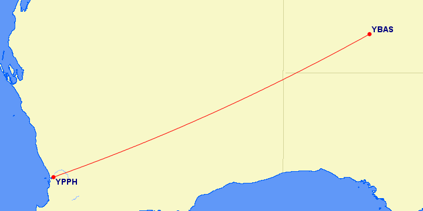
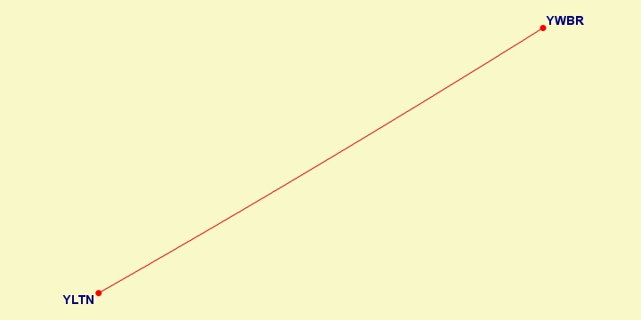
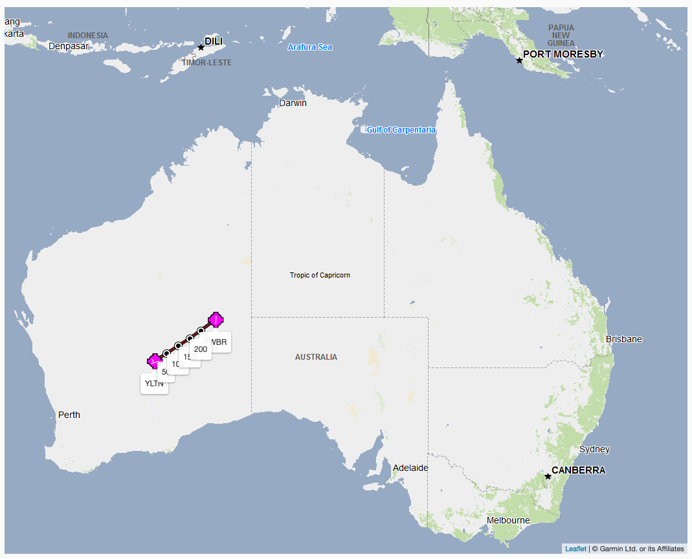
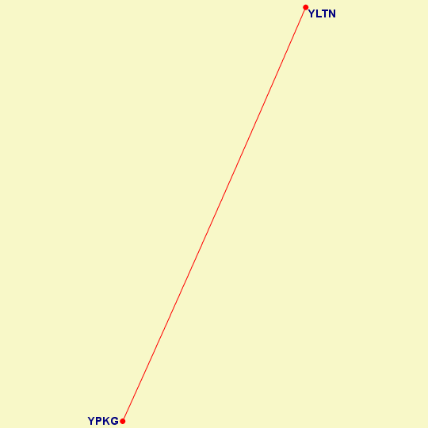
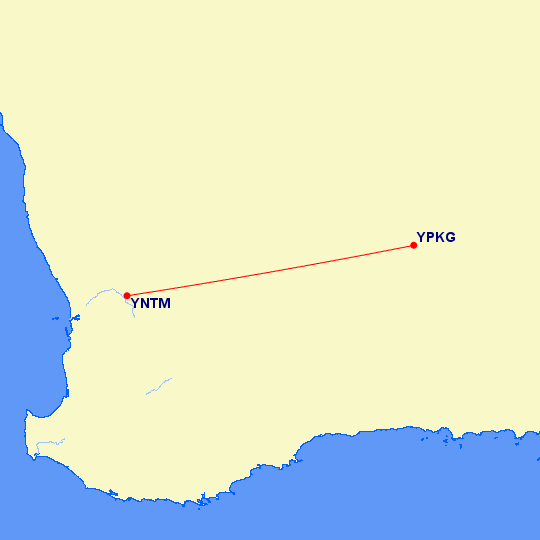
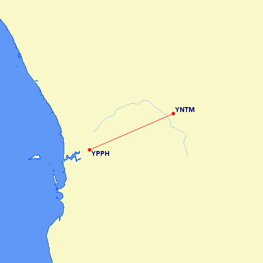

2023.10.01 20:15:32
1. Australia, Oceania and East Asia
1.1. Perth - Alice Springs

2023.10.01 20:21:22
1.1.4. Laverton - Warburton
YLTN - YWBR

23.09.30
https://skyvector.com/airport/YWBR/Warburton-Airport
http://www.gcmap.com/mapui?P=YLTN-YWBR


| From | To | Initial Heading | Magnetic Heading | Distance |
|---|---|---|---|---|
| YLTN | YWBR | 057°(NE) | 056°(NE) | 308 mi |
1h 45min
2023.10.01 20:20:19
1.1.3. Kalgoorlie - Laverton
YPKG - YLTN

23.09.17
https://skyvector.com/airport/YLTN/Laverton-Airport
http://www.gcmap.com/mapui?P=YPKG-YLTN

| From | To | Initial Heading | Magnetic Heading | Distance |
|---|---|---|---|---|
| YPKG | YLTN | 021°(N) | 021°(N) | 161 mi |
About 30 min
2023.10.01 20:19:00
1.1.2. Northam - Kalgoorlie
YNTM - YPKG
23.09.13
https://skyvector.com/airport/YPKG/Kalgoorlie-Boulder-Airport http://www.gcmap.com/mapui?P=YNTM-YPKG

| From | To | Initial Heading | Magnetic Heading | Distance |
|---|---|---|---|---|
| YNTM | YPKG | 080° (E) | 081°(E) | 289 mi |
Embraer ERJ-145
1 h 36 min
2023.10.01 20:18:10
1.1.1. Perth - Northam
YPPH - YNTM
23.09.10
https://skyvector.com/airport/YNTM/Northam-Airport
http://www.gcmap.com/mapui?P=YPPH-YNTM&MS=wls&DU=mi

| From | To | Initial Heading | Magnetic Heading | Distance |
|---|---|---|---|---|
| YPPH | YNTM | 063° (NE) | 065° (NE) | 47 mi |
CESSNA 172 50 minutes total. Two airstrip failed aproaches, crash landed. Exciting start!